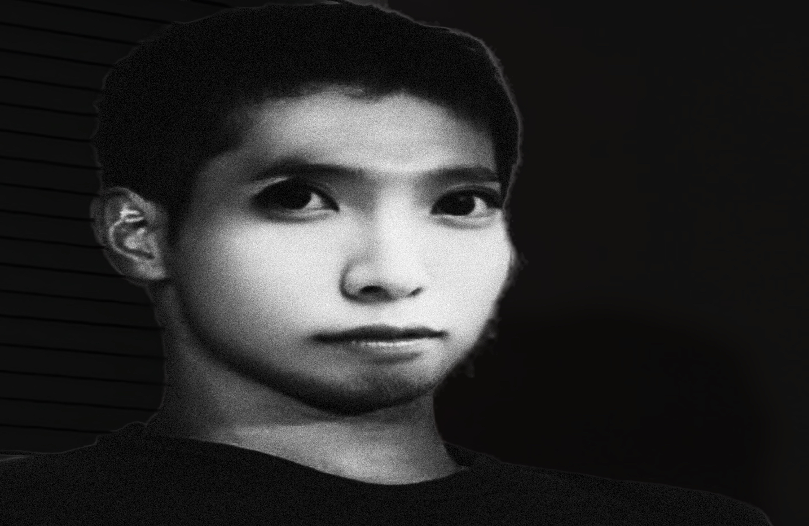

<!DOCTYPE html>
<html lang="ja">
<head>
  <meta charset="UTF-8" />
  <meta name="viewport" content="width=device-width,initial-scale=1.0,user-scalable=no">
  <title>翻訳デモ</title>
  <style>
    html, body {
      margin: 0; padding: 0;
      height: 100%; width: 100%;
      font-family: -apple-system, BlinkMacSystemFont, "San Francisco", "Helvetica Neue", "Helvetica", sans-serif;
      background: #e3ebff;
      overflow: hidden;
    }
    .fade-bg, .fade-color {
      position: fixed; inset: 0; width: 100vw; height: 100vh;
      pointer-events: none; z-index: 0;
    }
    .fade-bg { opacity: 1; transition: none; }
    .fade-color { opacity: 0; background: #1484ff; transition: opacity 0.77s cubic-bezier(.77,0,.18,1);}
    .center-container {
      position: fixed; inset: 0;
      display: flex; flex-direction: column; justify-content: center; align-items: center;
      min-height: 100vh; min-width: 100vw;
      pointer-events: none;
      z-index: 30;
    }
    .top-text, .bottom-text {
      font-size: 80px; color: #fff; text-align: center; width: 80vw;
      margin: 1.7em 0 0.5em 0;
      letter-spacing: 0.03em; user-select: text; pointer-events: auto;
    }
    .mic-wrapper {
      display: flex; justify-content: center; align-items: center;
      height: 160px; width: 100vw; min-width: 180px;
      position: relative; margin: -88px 0 0 0;
      z-index: 60; pointer-events: auto;
    }
    .mic {
      width: 190px; height: 190px; border-radius: 50%;
      background: #fff; box-shadow: 0 2px 8px #0001;
      display: flex; justify-content: center; align-items: center;
      font-size: 2.3em; font-weight: 700; color: #000;
      cursor: pointer; user-select: none; pointer-events: auto;
      transition: transform 0.18s cubic-bezier(.6,2.5,.2,.8);
      z-index: 9999;
    }
    .mic.bounce-anim { animation: micBigBang 1s ease; }
    @keyframes micBigBang { 0% { transform: scale(1);} 50% { transform: scale(1.5);} 100% { transform: scale(1);} }
    .mic.boom { animation: boomscale 0.55s ease;}
    @keyframes boomscale { 0% { transform: scale(1);} 50% { transform: scale(1.5);} 100% { transform: scale(1);} }
    .slide-up { animation: slideUp 0.5s cubic-bezier(.7,0,.25,1);}
    @keyframes slideUp { 0% { opacity: 0; transform: translateY(25px);} 100% { opacity: 1; transform: translateY(0);}
    }
    .mic.expand-fullscreen {
      position: fixed !important;
      left: 50% !important; top: 50% !important;
      transform: translate(-50%, -50%) scale(22) !important;
      transition: transform 0.75s cubic-bezier(.77,0,.18,1), box-shadow 0.3s;
      z-index: 11000 !important;
      pointer-events: none;
    }
    /* 野獣先輩専用: 背景真っ黒＆画像のみ中央で最大化（縦横比維持） */
    .yajuu-full-bg {
      position: fixed; inset: 0;
      width: 100%; height: 100vh;
      z-index: 20000;
      background: #000 !important;
      display: flex; justify-content: center; align-items: center;
      /* フェードなし */
    }
    .yajuu-img {
      width: auto; height: 100vh;
      object-fit: contain; /* 縦横比維持して最大 */
      display: block; margin: auto;
      filter: drop-shadow(0 0 44px #000a);
      user-select: none;
      pointer-events: none;
      background: #000;
    }
    .close-button {
      position: absolute; left: 18px; top: 20px;
      width: 56px; height: 56px; border-radius: 50%;
      background: #ffffff5e; box-shadow: 0 2px 10px #aad3ff23;
      cursor: pointer; z-index: 10000; pointer-events: auto;
    }
    .close-button:after {
      text-shadow: 0 0 25px #0009;
      content: "×";
      font-size: 40px; color: #fff;
      position: absolute; left: 16px; top: 1px; font-weight: 1; pointer-events: none;
    }
    .input-area {
      width: 100vw; position: fixed; left: 0; right: 0; bottom: 0;
      display: flex; justify-content: center; align-items: flex-end;
      background: none; z-index: 9999; padding-bottom: env(safe-area-inset-bottom, 8px);
      pointer-events: auto;
    }
    .input-inner { flex: 1; display: flex; justify-content: center; max-width: 520px;}
    input[type="text"] {
      transition: all 0.3s ease; width: 95vw; max-width: 500px;
      font-size: 1.18em; padding: 18px 25px; border: 0; outline: none;
      border-radius: 2em; margin: 1em 0 1.1em 0;
      background: #ffffffdb;
      box-shadow: 0 2px 16px #ffffff2b, inset 0 0 56px #fff;
      color: #254166;
    }
    input[type="text"]:focus {
      background: #ffffffab;
      box-shadow: 0 2px 16px #fff3, inset 0 0 42px #fff;
    }
    @media (max-width: 600px) {
      .top-text, .bottom-text { font-size: 61px;}
      input[type="text"] {width:80%; font-size: 18px;}
      .close-button { left: 9px; top: 40%; width: 72px; height: 72px; }
      .close-button:after { content: "←"; font-size: 40px; left: 17px; top: 12px;}
    }
  </style>
</head>
<body class="jp-bg">
  <div class="fade-bg" id="fadeBg"></div>
  <div class="fade-color" id="fadeColor"></div>
  <div class="center-container">
    <div class="top-text" id="topText"></div>
    <div class="mic-wrapper">
      <div class="mic" id="mic"></div>
    </div>
    <div class="bottom-text" id="bottomText"></div>
    <div class="close-button" id="closeBtn"></div>
  </div>
  <div class="input-area">
    <div class="input-inner">
      <input id="inputText" type="text" placeholder="ここに入力…" autocomplete="off" autocorrect="off" autocapitalize="off" spellcheck="false" />
    </div>
  </div>
<script>
const GRADIENT =
  `radial-gradient(at 46% 5%, rgba(0,186,137,0.616) 0, transparent 50%),
   radial-gradient(at 30% 94%, rgb(88,80,247) 0, transparent 50%),
   radial-gradient(at 90% 5%, rgb(182,198,255) 0, transparent 50%),
   radial-gradient(at 24% 60%, rgba(241,90,246,0.622) 0, transparent 50%),
   radial-gradient(at 64% 7%, rgb(255,51,204) 0, transparent 50%),
   radial-gradient(at 63% 25%, rgb(169,234,189) 0, transparent 50%),
   radial-gradient(at 6% 40%, rgb(15,182,162) 0, transparent 50%)`;

const COLORS = {
  blue: "#1484ff",
  red:  "#ff4e7b"
};
const fadeBg = document.getElementById('fadeBg');
const fadeColor = document.getElementById('fadeColor');
fadeBg.style.background = GRADIENT;

window.addEventListener("DOMContentLoaded", () => {
  fadeColor.style.background = COLORS.blue;
  fadeColor.style.opacity = 0;
  setTimeout(() => {
    fadeColor.style.transition = "opacity 0.77s cubic-bezier(.77,0,.18,1)";
    fadeColor.style.opacity = 1;
    nowColor = "blue";
    nextColor = "red";
  }, 50);
});

let isFading = false;
function crossFadeBg(nextColorKey) {
  if (isFading) return;
  isFading = true;
  fadeColor.style.transition = "opacity 0.5s linear";
  const tmp = document.createElement('div');
  tmp.className = 'fade-color';
  tmp.style.background = COLORS[nextColorKey];
  tmp.style.opacity = 0;
  tmp.style.zIndex = 1;
  document.body.appendChild(tmp);
  setTimeout(() => {
    tmp.style.transition = "opacity 0.5s linear";
    tmp.style.opacity = 1;
    setTimeout(() => {
      fadeColor.style.transition = 'none';
      fadeColor.style.background = COLORS[nextColorKey];
      fadeColor.style.opacity = 1;
      document.body.removeChild(tmp);
      [nowColor, nextColor] = [nextColor, nowColor];
      isFading = false;
    }, 500);
  }, 10);
}

let isJpToEn = true;
const mic = document.getElementById('mic');
const input = document.getElementById('inputText');
const topText = document.getElementById('topText');
const bottomText = document.getElementById('bottomText');
const closeBtn = document.getElementById('closeBtn');
const body = document.body;

function swapLangBg() {
  crossFadeBg(isJpToEn ? "blue" : "red");
  if (isJpToEn) {
    body.classList.add("jp-bg");
    body.classList.remove("en-bg");
  } else {
    body.classList.add("en-bg");
    body.classList.remove("jp-bg");
  }
}
function triggerMicBounce() {
  mic.classList.remove("bounce-anim");
  void mic.offsetWidth;
  mic.classList.add("bounce-anim");
}
function scrollInputIntoView() {
  setTimeout(() => {
    input.scrollIntoView({behavior: 'smooth', block: 'end', inline: 'nearest'});
  }, 120);
}
input.addEventListener('focus', scrollInputIntoView);

mic.style.transform = "scale(0.5)";
setTimeout(()=>{
  mic.style.transition="transform 0.95s ease";
  mic.style.transform="scale(1)";
}, 100);

let enterCount = 0;
let yajuuPlaying = false;
input.addEventListener("input", async e => {
  if (yajuuPlaying) return;
  triggerMicBounce();
  let val = input.value;
  const txt = val.trim().toLowerCase();

  // 野獣先輩・やりますねぇ判定
  const isYajuu = /^(野獣先輩|やじゅうせんぱい|yajuu ?senpai)$/i.test(txt);
  const isYarimasune = /^(やりますねぇ|yarimasu ?nee+)$/i.test(txt);

  if (isYajuu || isYarimasune) {
    yajuuPlaying = true;
    input.blur();
    playYajuuScene(isYarimasune);
    return;
  }

  // 言語切替
  if(["english","eng","en","英語"].includes(txt)){
    isJpToEn = false;
    swapLangBg();
    input.value = "";
    bottomText.textContent = "";
    return;
  }
  if(["日本語","にほんご","japanese","かな"].includes(txt)){
    isJpToEn = true;
    swapLangBg();
    input.value = "";
    bottomText.textContent = "";
    return;
  }

  if (!val.trim()) {
    bottomText.textContent = "";
    bottomText.classList.remove("slide-up");
    return;
  }
  const from = isJpToEn ? "ja" : "en";
  const to   = isJpToEn ? "en" : "ja";
  try {
    const res = await fetch(`https://api.mymemory.translated.net/get?q=${encodeURIComponent(val)}&langpair=${from}|${to}&rand=${Date.now()}`);
    const data = await res.json();
    let translated = (data && data.responseData && data.responseData.translatedText) ? data.responseData.translatedText : "";
    bottomText.textContent = translated;
    bottomText.classList.remove("slide-up");
    void bottomText.offsetWidth;
    bottomText.classList.add("slide-up");
  } catch (e) {
    bottomText.textContent = "翻訳エラー";
  }
});

// ★リダイレクト先は引数で分岐
function playYajuuScene(to810 = false) {
  document.querySelectorAll('input,button,.mic,.close-button').forEach(el=>{
    el.style.pointerEvents="none";
  });
  const bg = document.createElement('div');
  bg.className = 'yajuu-full-bg';
  bg.innerHTML = ``;
  document.body.appendChild(bg);
  const audio = new Audio('mac.wav');
  audio.play().catch(()=>{});
  audio.addEventListener('ended', ()=>{
    location.href = to810 ? "https://810114514.netlify.app/?r=1" : "https://810114514.netlify.app/810?r=1";
  });
  window.addEventListener('resize', ()=>{});
}

mic.addEventListener('click', () => {
  if (yajuuPlaying) return;
  triggerMicBounce();
  isJpToEn = !isJpToEn;
  input.value = "";
  bottomText.textContent = "";
  input.placeholder = isJpToEn ? "ここに入力…" : "Type here...";
  swapLangBg();
  setTimeout(()=>input.focus(),100);
});
input.addEventListener("keydown", e => {
  if (yajuuPlaying) return;
  if (e.key === "Enter") {
    if (input.value.trim() === "") {
      enterCount++;
    } else {
      enterCount = 0;
    }
    if (enterCount >= 2) {
      bottomText.textContent = "";
      input.value = "";
      enterCount = 0;
    }
    scrollInputIntoView();
  } else {
    enterCount = 0;
  }
});

closeBtn.addEventListener('click', () => {
  if (yajuuPlaying) return;
  body.style.transition = "opacity 0.88s ease";
  body.style.opacity = 0.98;
  mic.classList.add("expand-fullscreen");
  setTimeout(()=>{
    body.style.opacity = 0;
    setTimeout(()=>location.href="en.html", 800);
  }, 20);
});

window.addEventListener("load", () => {
  input.value = "";
  bottomText.textContent = "";
  bottomText.classList.remove("slide-up");
  topText.innerHTML = "";
});

</script>
<script>
if (performance && performance.navigation && performance.navigation.type === 2) {
  // 旧API(Chrome/Edge/Firefoxの戻る)対応
  location.reload(true);
} else if (window.performance && window.performance.getEntriesByType) {
  // 新しいAPIの履歴キャッシュ（bfcache）対応
  window.addEventListener("pageshow", function(event) {
    if (event.persisted) {
      location.reload();
    }
  });
}
</script>


</body>
</html>
